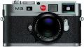

器材库 > 35mm画幅可换镜头数码相机 > M9

规格总览
产品类型
35mm画幅可换镜头数码相机
发布日期
2009-09-09
厂家推荐价格
4,850.00 （英镑）
影像规格
影像传感器
CCD
影像传感器尺寸
23.9 x 35.8mm
总像素
1850万
有效像素
1800万
最大解像度
5212 x 3472
静态图像格式
JPEG, DNG
静态图像尺寸
5212 x 3472, 3840 x 2592, 2592 x 1728, 1728 x 1152, 1280 x 846
静态图像质量
标准，精细
画幅比
3:2
镜头和对焦
镜头卡口
Leica M
对焦模式
AF / MF
曝光控制
测光系统
Center-biased TTL
快门速度
1/4000 - 4秒
曝光补偿
±3EV以1/3EV级调整
连拍
2 fps
取景器/显示屏
取景器
光学取景器
取景放大倍率
0.68倍
LCD尺寸
2.5英寸
LCD像素
23万
Live View
无
文件输入/输出
存储卡
SD/SDHC
数据接口
USB2.0
电源
电池
可充电锂电池
机身规格
颜色
黑色, 灰色
尺寸
139 x 80 x 37mm
重量
585g
其它
配件端口
热靴
哈斯2017-09-03 00:414.13 分
操作性 4.50功能性 4.50美观性 5.00趣味性 4.50耐用性 3.50性价比 3.00解像力 4.00色彩还原 4.00
hoomenkoa2016-11-14 20:304.19 分
操作性 5.00功能性 5.00美观性 5.00趣味性 4.00耐用性 4.00性价比 1.00解像力 4.50色彩还原 5.00
luojiubei2015-12-02 20:594.94 分
操作性 5.00功能性 5.00美观性 5.00趣味性 5.00耐用性 4.50性价比 5.00解像力 5.00色彩还原 5.00
心驰山水间2012-08-15 17:094.75 分
操作性 4.50功能性 4.50美观性 5.00趣味性 5.00耐用性 5.00性价比 4.00解像力 5.00色彩还原 5.00
xuliangshey2012-07-08 15:064.44 分
操作性 4.00功能性 4.00美观性 5.00趣味性 4.00耐用性 5.00性价比 3.50解像力 5.00色彩还原 5.00
kenan16082012-06-23 09:164.06 分
操作性 4.50功能性 4.00美观性 5.00趣味性 4.50耐用性 3.50性价比 3.00解像力 4.50色彩还原 3.50
最后手动2012-03-24 13:454.69 分
操作性 4.50功能性 4.50美观性 5.00趣味性 5.00耐用性 4.50性价比 4.00解像力 5.00色彩还原 5.00
khadgar9592012-02-06 21:124.63 分
操作性 5.00功能性 5.00美观性 5.00趣味性 5.00耐用性 4.00性价比 3.00解像力 5.00色彩还原 5.00
sc2012012-01-12 04:254.31 分
操作性 4.50功能性 4.00美观性 5.00趣味性 4.00耐用性 5.00性价比 3.00解像力 4.50色彩还原 4.50
day20002011-11-04 20:394.88 分
操作性 5.00功能性 5.00美观性 5.00趣味性 5.00耐用性 5.00性价比 4.00解像力 5.00色彩还原 5.00
day20002011-11-04 20:36
mllppp2011-10-20 16:453.19 分
操作性 3.00功能性 3.00美观性 3.00趣味性 3.00耐用性 3.00性价比 0.50解像力 5.00色彩还原 5.00
kokman0072011-08-15 02:314.81 分
操作性 5.00功能性 4.00美观性 4.50趣味性 5.00耐用性 5.00性价比 5.00解像力 5.00色彩还原 5.00
产品图 / 样片
徕卡 M9 灰色版
评测 / 相关文章
- 详细内容 （存档）
- 徕卡M9试用报告 （存档）
- ［影像］感受精彩世界之徕卡篇 （存档）
- ［资讯］免费更换 徕卡召回部分M系列相机锂电池 （存档）
- ［试用］泡菜视界 徕卡M9的惊喜世界 （存档）
- ［试用］用徕卡记录生活 （存档）
- ［试用］徕卡M9与徕卡新M同场景对比测试 （存档）
- ［资讯］徕卡公布M9/M9-P最新固件 （存档）
- ［资讯］徕卡M9/M9-P固件升级至1.176 （存档）
- ［行情］旁轴相机强悍配置 徕卡M9售68000 （存档）
- ［影像］徕卡M9:黑与白 （存档）
- ［资讯］徕卡M9固件更新至1.174 （存档）
相关文章
- ［影像］感受精彩世界之徕卡篇 （存档）
- ［资讯］免费更换 徕卡召回部分M系列相机锂电池 （存档）
- ［试用］泡菜视界 徕卡M9的惊喜世界 （存档）
- ［试用］用徕卡记录生活 （存档）
- ［试用］徕卡M9与徕卡新M同场景对比测试 （存档）
- ［资讯］徕卡公布M9/M9-P最新固件 （存档）
- ［资讯］徕卡M9/M9-P固件升级至1.176 （存档）
- ［行情］旁轴相机强悍配置 徕卡M9售68000 （存档）
- ［影像］徕卡M9:黑与白 （存档）
- ［资讯］徕卡M9固件更新至1.174 （存档）
- ［资讯］徕卡公布M9最新固件 （原站已下线）
- ［行情］贵族机徕卡M9摄苑网现货促销！ （原站已下线）
- ［资讯］徕卡M9钛合金限量版上市 （原站已下线）
- ［资讯］徕卡M9银镀铬限量版上市 （原站已下线）